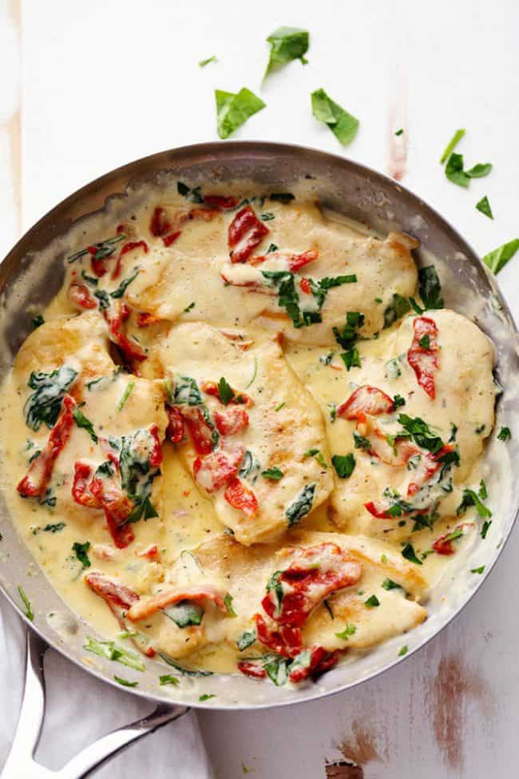

Tuscan Chicken Pasta

Description
I'll admit, I had to do a bit of research on where “Tuscan chicken” actually originated from. But it seems like there's no one strict answer. My two cents is that it's a spin on a classic Italian Florentine sauce, which is made from white wine, cream, and spinach. Then it was given a Tuscan twist by adding garlic and sun-dried tomatoes to the warm cream and spinach base.
But what really popularized this dish (at least in America) was Olive Garden's Tuscan Garlic Chicken, a dish with a similar flavor profile, served over fettuccine.
Either way, I'm glad this Tuscan chicken became a trend because it's literally the best thing ever. Especially when you're craving something rich and cheesy, with an Italian flair.
Ingredients
For the Pasta:
- 1 lb Penne or other pasta
- 1 tablespoon butter
For the Chicken and Sauce:
- 2 tablespoons olive or vegtable oil
- 1 ½ pounds chicken breasts
- 1 medium onion, diced
- 1 red bell pepper, diced
- 8.5 ounce jar sundried tomatoes in oil, drained
- 5 cloves garlic, finely minced
- 1 teaspoon dried italian seasoning
- ¾ cup chicken broth
- 1 ½ cup cream
- ¾ cup parmesan cheese
- 6 ounce bag of baby spinach leaves
- Red pepper flakes (salt, and pepper to taste)
Steps
- Bring a large pan of salted water to a boil. Add the pasta and cook until al dente. Drain and toss with butter.
- Optional: For quicker, more even cooking, slightly flatten breasts with a kitchen mallet. If they are very thick, slice them in half horizontally before flattening.
- Season chicken with salt and pepper.
- Heat a skillet over high heat. When pan is hot, add 1 tablespoon oil.
- When oil is hot, put chicken breasts in pan and cook until golden brown on both sides and cooked through. Remove chicken from pan.
- Let chicken cool for a few minutes, then slice. Set aside.
- Add remaining tablespoon oil to pan. Add onions and cook until softened.
- Add red bell pepper and cook until almost softened.
- Add the garlic, sundried tomatoes, and Italian seasoning. Stir, and cook for about 1 minute.
- Deglaze pan with broth, scraping bottom to release any bits sticking to the bottom of the pan.
- Add cream and bring to a simmer. Allow to simmer for 2 minutes. Add parmesan and cook until melted.
- When cheese is melted turn off the heat and stir in baby spinach.
- Salt and pepper to taste.
- Combine pasta, chicken, and sauce.
- Serve.
Back to Homepage